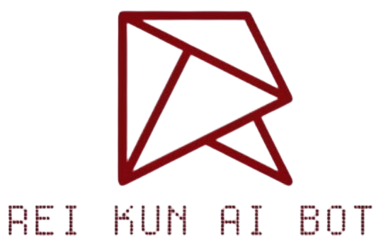

The Persona-Driven AI Orchestrator
Rei-kun is a production-grade Discord orchestrator serving an active student community. Unlike basic bots, it utilizes a multi-model fallback engine via OpenRouter, ensuring 100% uptime by switching between DeepSeek, LLaMA 4, GPT, and Gemini.
Key technical features include:
Host: Self-managed Linux VPS
RAM: 3GB
CPU: 2-Core
Runtime: Python 3.13
Libraries: discord.py, aiohttp, JSON storagegit clone https://github.com/Aj-Niplex/Rei-kun-Bot.git
cd Rei-kun-Bot
pip install -r requirements.txt
cp .env.example .env
python app.py